道具紹介 道具一覧
- 全て
- 抹茶茶碗
- 茶筅
- 茶杓
- 水指
-
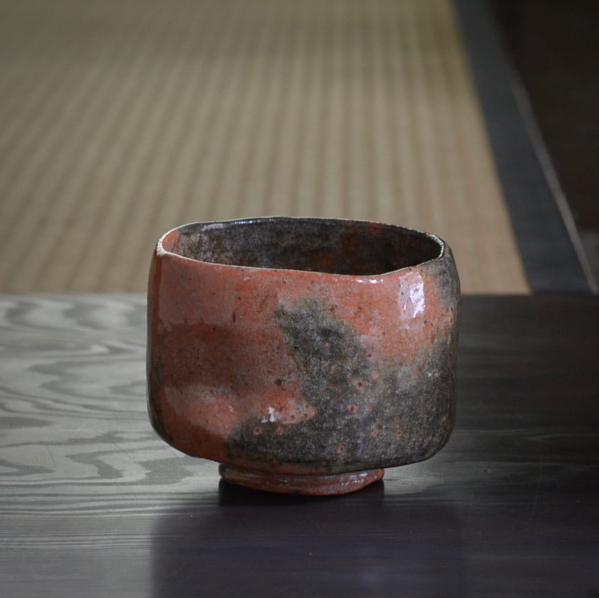
Product Name 01
¥99,999
-
楽焼
わび茶の世界を完成させた千利休が京都の楽家に作らせたのがはじまりとされる「楽焼」。
楽焼は茶道のために考えられたつくりなのも特徴。
「茶筌摺り（ちゃせんずり）」という底が広くなったつくりで茶筌が回しやすくお茶を点てやすいほか、飲み口がやや内向きになっていて、飲むときにお茶が器の外にたれず、美しく飲めるなどの工夫が施されています。
色の違いによって「黒楽」、「赤楽」などがあります。 -
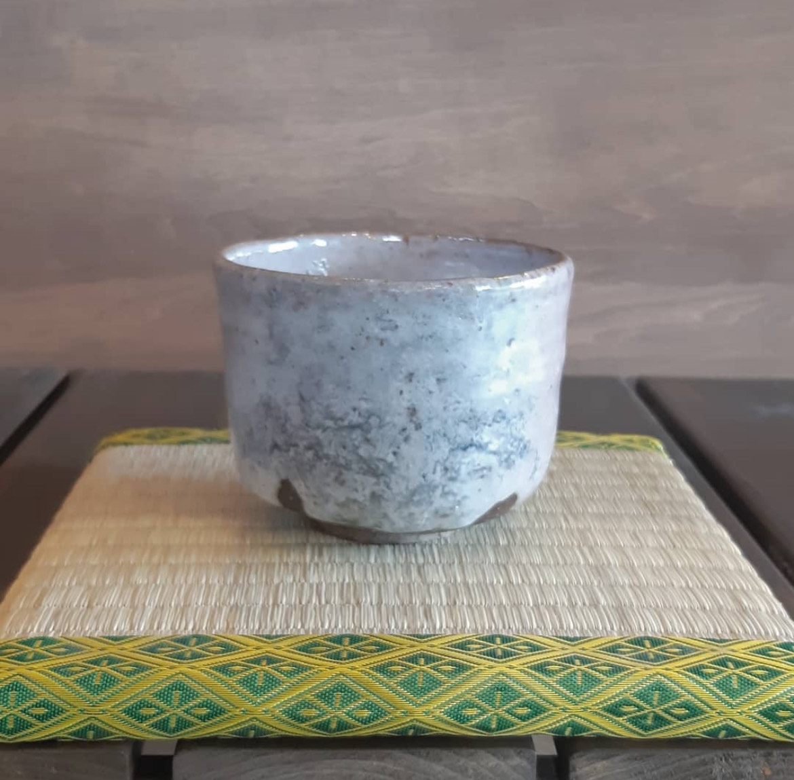
萩焼
山口県萩市を中心に作られる「萩焼」。
萩焼の持ち味は、おもに地元でとれる3種類の陶土を混ぜ合わせて作られるあたたかみのある色合いと、窯で焼く過程で自然にできあがる貫入（かんにゅう）と呼ばれるこまかいヒビ模様。
また、このヒビのすき間からお茶などが染み込んで、使い込むほどに器の色合いが変化する「萩の七化け」と呼ばれる経年変化も大きな魅力です。 -
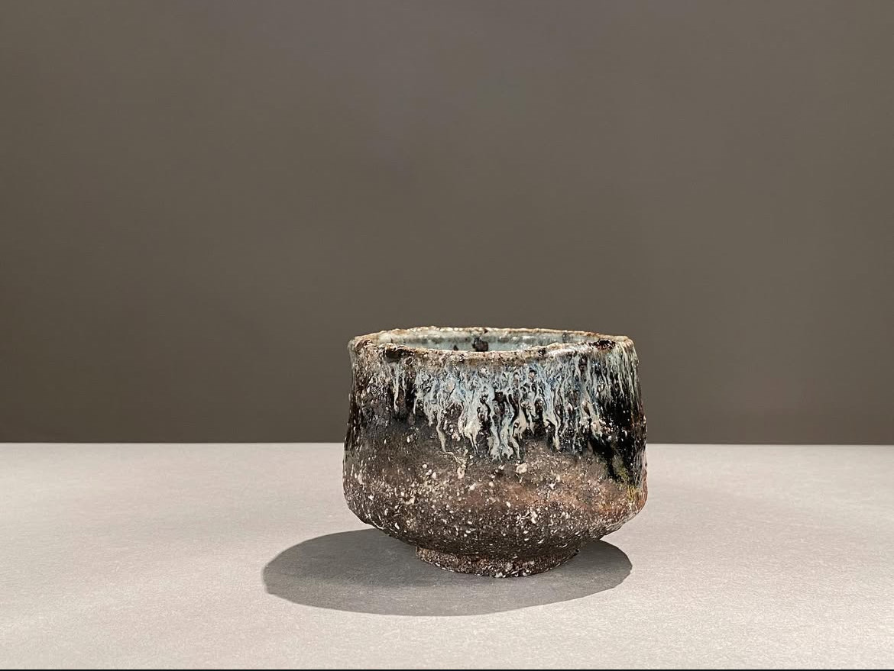
唐津焼
「唐津焼」は、佐賀県唐津市を中心に焼かれる焼き物。
土の味わいが感じられる素朴で渋みがある作風で、茶人たちにも愛されてきました。
唐津焼にはさまざまな装飾方法があって、バリエーションに富んでいることも特徴です。
草花や鳥などを描いた「絵唐津」や、うわぐすりの表面に黒や青のまだら模様ができる「斑唐津（まだらがらつ）」、二種類のうわぐすりが使われ黒白のグラデーションが美しい「朝鮮唐津」などがあります。 -
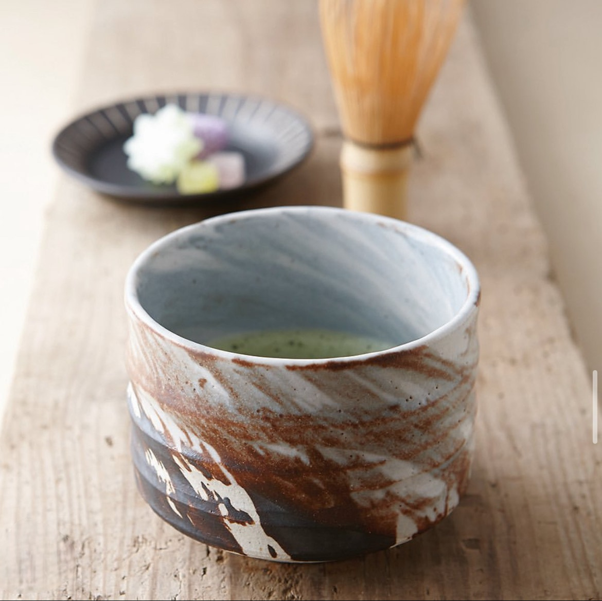
美濃焼
美濃焼は岐阜県美濃地方で生産される陶磁器の総称で、1300年以上の歴史を持ちます。
安土桃山時代の茶の湯文化とともに発展し、
「織部」「黄瀬戸」「瀬戸黒」「志野」の4種が代表的で多様な表現が特徴です。
織部……緑色のうわぐすりをかけたものが有名。あえて歪ませるなど奇抜な作品が多いことも特徴。
黄瀬戸……草木の灰から作るうわぐすりをかけて焼いたもの。淡黄色で上品な雰囲気。
瀬戸黒……鉄分の多いうわぐすりをかけて焼く途中、窯から出して急冷することで生み出される深い黒色と艶が魅力。
志野……乳白色と小さな気泡状の肌が特徴。素朴であたたかみがあるのが特徴。 -
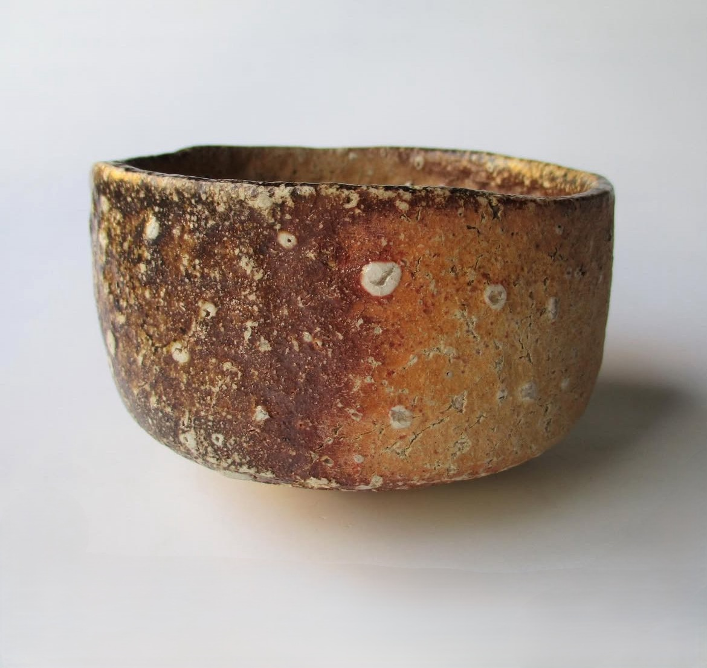
信楽焼
「信楽焼」は、滋賀県甲賀市信楽町を中心に作られている陶器。
素朴な味わいがわびさびの精神を重んじる茶人に注目され、安土桃山時代には茶道の茶碗としても人気を集めました。
信楽焼は、焼くと自然にできあがる色合いや模様が持ち味。
焼きの工程で炎が表面に焼き付いて赤色に発色する「火色」や、長石という石が溶けて白く粒が現れる「あられ」などさまざまな模様があります。
ひとつとして同じものが作れないことも特別な味わいが感じられます -
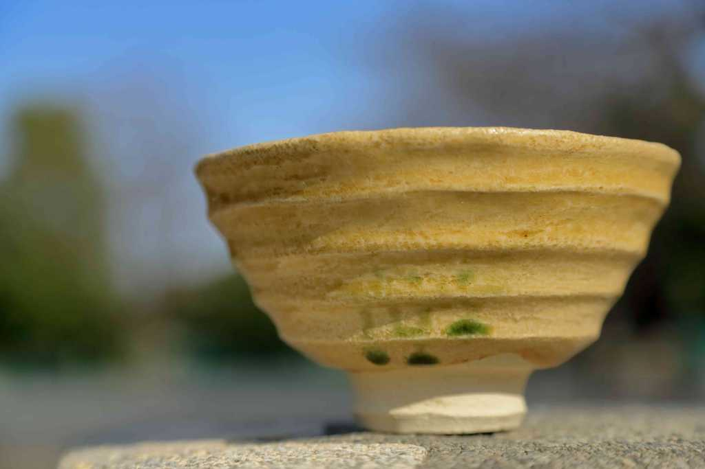
井戸茶碗
「井戸茶碗」は、飲み口に向かって広がっていくすり鉢型の茶碗。
丸みが控えめでお茶を点てやすいのが魅力で、茶道に適していることから茶道のおける茶碗の格付で、「一井戸二楽三唐津」という言い方をする場合もあります。
もともとは、朝鮮で作られていた器ですが、のちに日本でも多く作られるようになりました。 -
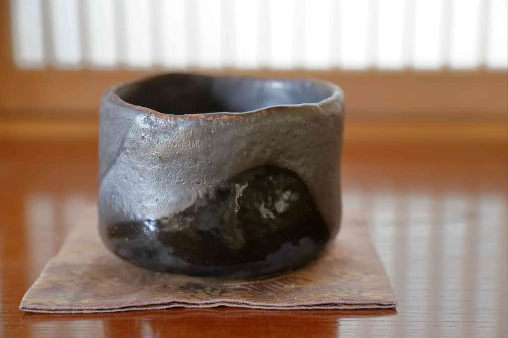
筒茶碗
胴がまっすぐ伸び、口が狭い茶碗を「筒茶碗」と呼びます。
筒茶碗のなかでも深さがある「深筒茶碗」は、保温性が高いことから冬を中心に活躍する茶碗。
一方、浅いものは「半筒茶碗」と呼ばれ、夏を除きさまざまな季節で用いられます。 -
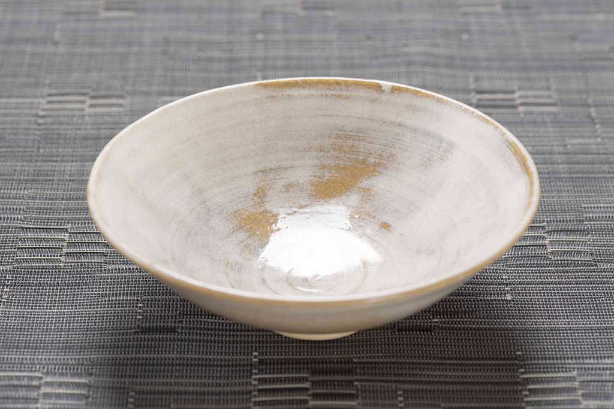
平茶碗
涼しげな印象で夏にぴったりなのが「平茶碗」。
口が大きく開いていて、浅いつくりが特徴です。
素材も陶器だけでなく、ガラス製のものも用いられます。
-
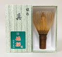
表千家
煤竹（すすだけ）煤竹は、囲炉裏の煙で燻された竹で、独特の色合いと風合いがあります。
-
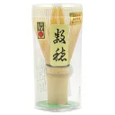
裏千家
白竹または淡竹（はちく）煤竹は、囲炉裏の煙で燻された竹で、独特の色合いと風合いがあります。
-
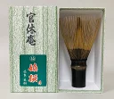
武者小路千家
紫竹（しちく）または黒竹穂先がまっすぐな形状が特徴です。